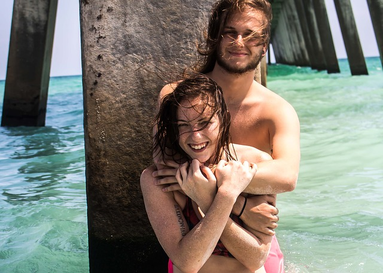
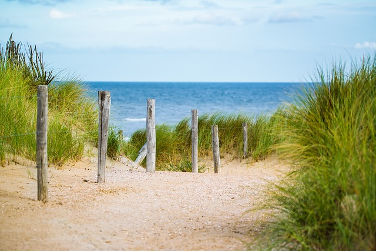

Galería





date_range23 de Marzo de 2018
location_onLima-Perú
El Parque Nacional Morrocoy con más de 30 mil hectáreas entre Tucacas y Chichiriviche. Lo conforma toda la costa entre estas poblaciones y gran cantidad de cayos (islotes).
Uno de estos Cayos en Sombrero, preferido por familias y uno de los mas buscados en el parque por sus aguas cristalinas facil acceso desde tucacas ya que esta a menos distancia que desde Chichiriviche, el viaje en lancha es mas suave, la mejor epoca para mi es fuera de temporada por que puedes disfrutar a plenitud toda la playa y en cuanto a servicio tienes lanchas de locales que pasan por la playa opfreciendo desde grandiosos ceviches hasta excelente langostas a muy buen precio ( eso si no acepten cuando no es temporada ya que estan en periodo de apariamiento)
Biologa Marina
Hija de Tony Quintero y Ana Carlota Montiel de Quintero, con dos hermanos mayores Cristóbal y Susana; y dos hermanos menores Inés y Antonio. Estudió en el Colegio San José de Tarbes de Caracas, desde kinder hasta quinto año de humanidades, y realizó estudios superiores en la Universidad Católica Andrés Bello, graduándose en 1976, de Licenciada en Comunicación Social, mención audiovisual. Con el plan de becas Gran Mariscal de Ayacucho, realizó una maestría en la Universidad de Boston, en los Estados Unidos, donde recibió el título de Magister en Tecnología Educativa. En 1980, después de múltiples tratamientos médicos para aumentar la fertilidad nace su única hija, Arianna Arteaga Quintero.
date_range23 de Marzo de 2018
location_onLima-Perú
Aun cuando estos cayos del PN Morrocoy son muy bonitos todos, si ponemos a Las Animas en comparación con otros, no es tan espectacular. Las aguas son un poco turbias, mucha algas para el momento de mi visita y tiene mucho coral. No hay arrecife vivo cercano, no tiene muelle y es pequeño. Lo bueno es que sus aguas son cálidas, la playa es limpia, es muy baja el nivel del agua. Recomiendo usos de calzado marino.
Editor
Su padre es el arquitecto Alejandro Chataing Roncajolo, miembro de una familia que ha marcado la arquitectura venezolana[cita requerida], y Gisela Zambrano Perdomo. Es nieto del arquitecto Luis Eduardo Chataing Pelayo (proyectista de la red hospitalaria del país, Liceo Andrés Bello, Hospital Militar, Hospital Oncológico, Escuela de Enfermeras, Aduana de la Guaira), quien a su vez era hijo de otro arquitecto famoso de aquel entonces, Alejandro Chataing Poleo (Nuevo Circo de Caracas, Museo Histórico Militar, Arco de Carabobo, Academia de Bellas Artes, Concejo Municipal de Caracas). Fue esposo de Daniela Kosán desde 1999 hasta el 2004. Desde el 2007 está casado con Ximena Otero, fruto de su relación nació Luis Ignacio y Sebástian.